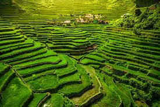
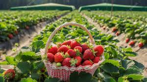

I am so happy that this time, when i visited Baguio, they are open after the previous renovation. Great to see new flowers in bloom. Also, the garden is clean and vert well maintained. I just hope tourists and visitors respect the cleanliness of the place and do not ruin the garden by picking flowers in it.

Ifugao Rice Terraces
Incredible experience and welcome from the inhabitants and their generosity very good travels I recommend this activity to everyone great guide "JERCY" very patient, funny, generous, attentive to our needs I recommend "JERCY" incredible person thank you for All !

Strawberry Farm
It was a great experience since I'm with my friends. from entering, you can see a lot of vendors selling same products and some of them you can try the products what they can offer. Definitely coming back here ☺
Sun Flower Farm
Love sunflowers? Here’s another Baguio flower farm to visit during the Panagbenga Festival: Bahong Flower Farm! This new nearby flower farm in Baguio is known for its 8,000 towering sunflowers. And if that doesn’t convince you enough, you can buy flowers here to support local businesses! If you’re curious about the flower farm process, this spot lets you know more about gardening practices straight from the locals.